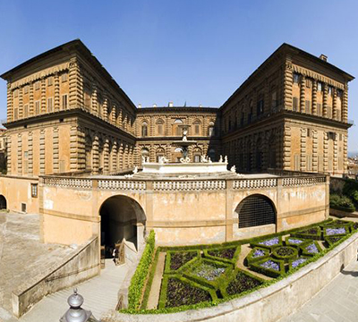
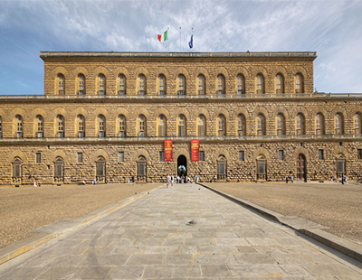

Osnovni podaci:
| Naziv: | Palazzo Pitti |
|---|---|
| Adresa: | Piazza de Pitti, 1 Firenca |

Palazzo Pitti je renesansna palača s južne strane rijeke Arno. Potječe iz 15. stoljeća, kad je bila dom bogatog bankara Pittija, da bi je sto godina kasnije kupila obitelj Medici i pretvorila u jednu od svojih rezidencija. U 16. stoljeću prostor se udvostručuje, gradi se već spomenuti 'Corridoio Vasariano', a kupljena je i zemlja na brdu Boboli pokraj palače, kako bi se izgradio vrt, danas poznat kao vrtovi Boboli, kojeg krase brojni drvoredi, skulpture te fontane.
Palazzo Pitti je palača s izrazitim obilježjima firentinske renesanse i čuvena galerija slika u Firenci. Dao ju je podići trgovac Luca Pitti (1394.-1472.) i građena je u drugoj polovici 15. st. Poslije palača prelazi u vlasništvo obitelji Medici i do 1859. bila je rezidencija toskanskih velikih vojvoda.


S početkom 20. stoljeća, pa sve do danas, palača postaje otvorena za javnost, a može se razgledati oko 140 unutrašnjih prostorija. Trenutačno je to najveći kompleks galerija u Firenci, od kojih izdvajamo Galeriju Palatina, Kraljevske apartmane, Galeriju moderne umjetnosti, Muzej srebra, Muzej porculana, Galeriju kostima i Muzej kočija.
Ulaznica za Palazzo Pitti košta 12 eura, a za Giardino di Boboli (s uključenim Muzejom porculana, Muzejom srebra i Galerijom kostima) 10 eura. Unutar Boboli vrtova preporučujemo Mali otok (L'Isolotto), Neptunovu fontanu, Aleju čempresa i Veliku špilju (La Grotta Grande).
| Naziv: | Palazzo Pitti |
|---|---|
| Adresa: | Piazza de Pitti, 1 Firenca |